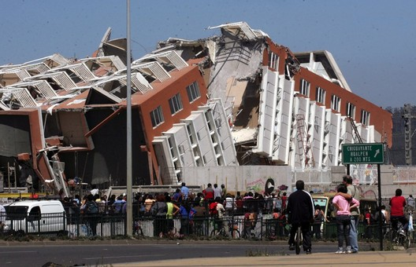

Dashboard
| Ubicación |
Magnitud |
Latitud |
Longitud |
Hora |
| 18 km al E de La Higuera |
3.7 |
-29.452 |
-71.028 |
2021/03/15 16:42:59 |
| Titulo |
Region en Alerta |
Fecha |
URL |
| Monitoreo Alerta Amarilla para las comunas de Coelemu y Trehuaco por inundación |
Ñuble |
11/03/2021 | 15:15 |
http://www.onemi.clhttps://www.onemi.gov.cl/alerta/alerta-amarilla-para-las-comunas-de-coelemu-y-trehuaco-por-inundacion |
| Ubicación |
Magnitud |
Latitud |
Longitud |
Hora |
| 1169 KM AL NE DE AUCKLAND - NUEVA ZELANDA |
8.1 |
-29.36 |
-176 |
04/03/2021 16:28 |
| Ubicación |
Magnitud |
Latitud |
Longitud |
Hora |
| 123 km al E de Manado - Indonesia |
4.5 |
1.4198 |
125.9558 |
2022/06/30 04:57:43 |
Magnitud (MAG):
Las magnitudes de los terremotos son reportados usando una escala logarítmica, que mide la fortaleza y la energía del terremoto y que es determinada por observaciones sismográficas .
Generalmente magnitudes son entre 0 y 10. Terremotos en el rango de 0 hasta 4 pasan con relativa frecuencia en el mundo, más de ~M6 se consideran importante, y más de ~M8 son raros y pueden ser destructivos. Pero cualquier terremoto puede ser destructivo si sucede en un lugar poblado o vulnerable. Igualmente, terremotos grandes pueden ocurrir en sitios remotos sin destrucción. Terremotos en cualquier lugar en o cerca del mar, pueden causar tsunamis.
Ésta lista solomente reporta terremotos de magnitud ~4 y mas grande. La razón es que partes del mundo son mejor cubiertas por sismografos, y no queremos representar que aquellas regiones en realidad son más activas sísmicamente. Pero al llegar al mapa, sigiuendo los enlaces, se puede establecer un rango de magnitud diferente.